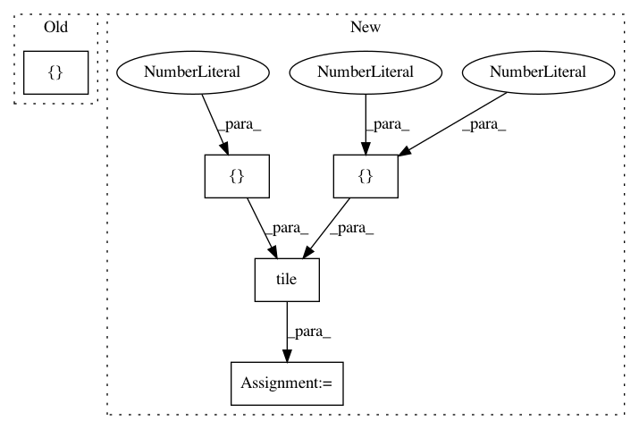

65cce49dcac95a195c1c3cb2283a4f4dbda981ec,deslib/tests/test_base.py,,test_preprocess_dsel_scores,#,199
Before Change
ds_test = DS(create_pool_classifiers())
ds_test.fit(X_dsel_ex1, y_dsel_ex1)
dsel_scores = ds_test._preprocess_dsel_scores()
expected = np.ones((15, 6)) * np.array([0.5, 0.5, 1.0, 0.0, 0.33, 0.67])
assert np.array_equal(dsel_scores, expected)
After Change
ds_test = DS(create_pool_classifiers())
ds_test.fit(X_dsel_ex1, y_dsel_ex1)
dsel_scores = ds_test._preprocess_dsel_scores()
expected = np.array([[0.5, 0.5], [1.0, 0.0], [0.33, 0.67]])
expected = np.tile(expected, (15, 1, 1))
assert np.array_equal(dsel_scores, expected)
def test_DFP_is_used():
In pattern: SUPERPATTERN
Frequency: 3
Non-data size: 5
Instances
Project Name: scikit-learn-contrib/DESlib
Commit Name: 65cce49dcac95a195c1c3cb2283a4f4dbda981ec
Time: 2018-03-25
Author: rafaelmenelau@gmail.com
File Name: deslib/tests/test_base.py
Class Name:
Method Name: test_preprocess_dsel_scores
Project Name: wenwei202/iss-rnns
Commit Name: 440e8cf180be8dbb851977859813e9208e3ec4bc
Time: 2016-08-31
Author: seominjoon@gmail.com
File Name: match/model.py
Class Name: Model
Method Name: _build_forward
Project Name: scikit-learn-contrib/DESlib
Commit Name: 65cce49dcac95a195c1c3cb2283a4f4dbda981ec
Time: 2018-03-25
Author: rafaelmenelau@gmail.com
File Name: deslib/tests/des/test_knop.py
Class Name:
Method Name: test_fit